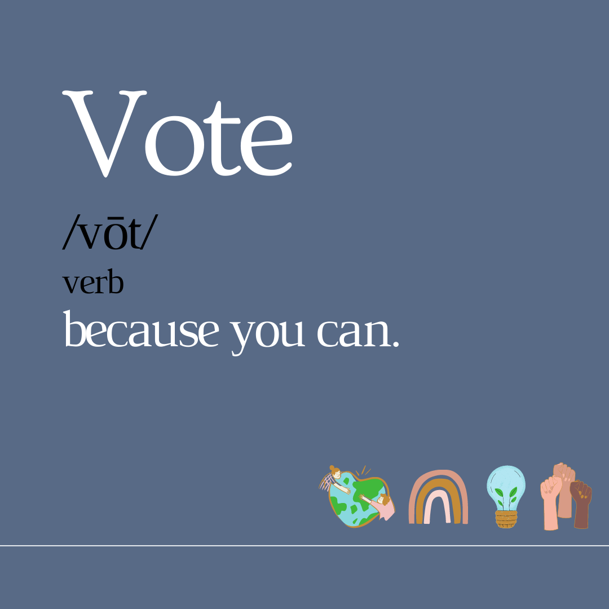
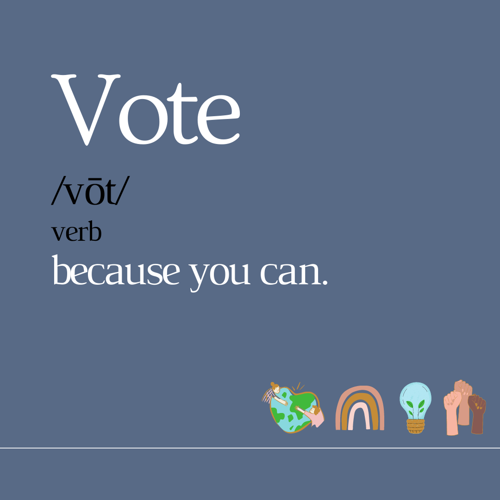
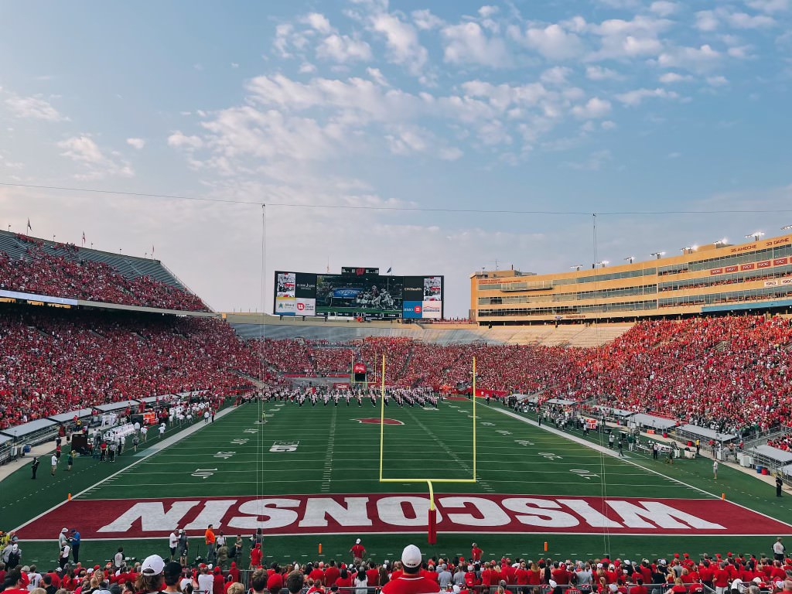

#ImVotingFor
I created this graphic and posted it on election day to remind my peers to vote. In the image I included some representations of the politcal issues most important to me.
I created this graphic and posted it on election day to remind my peers to vote. In the image I included some representations of the politcal issues most important to me.
I took this photo at my first Badger Football game. The sunset was really pretty that night and we won!
This graphic was a design created for resale stickers of the St. Croix River. I grew up on the river in the summers and was really excited to portray the how beautiful it is in this design!
This is a project that I made for Com Arts 355 and with the goal of the video to "move" the audience.